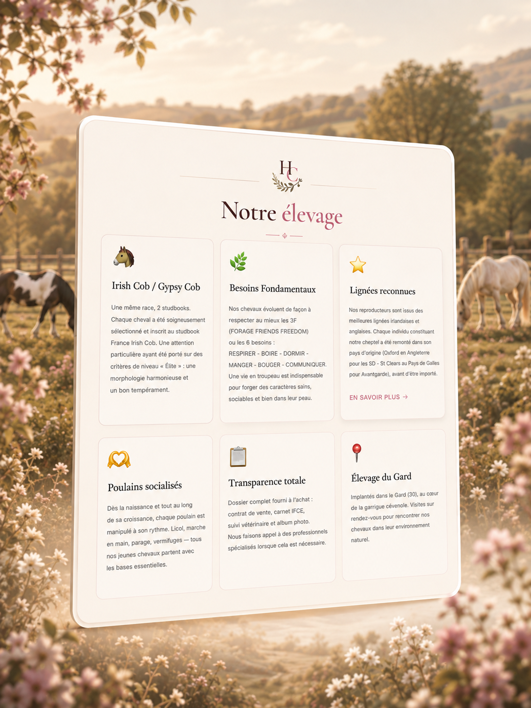
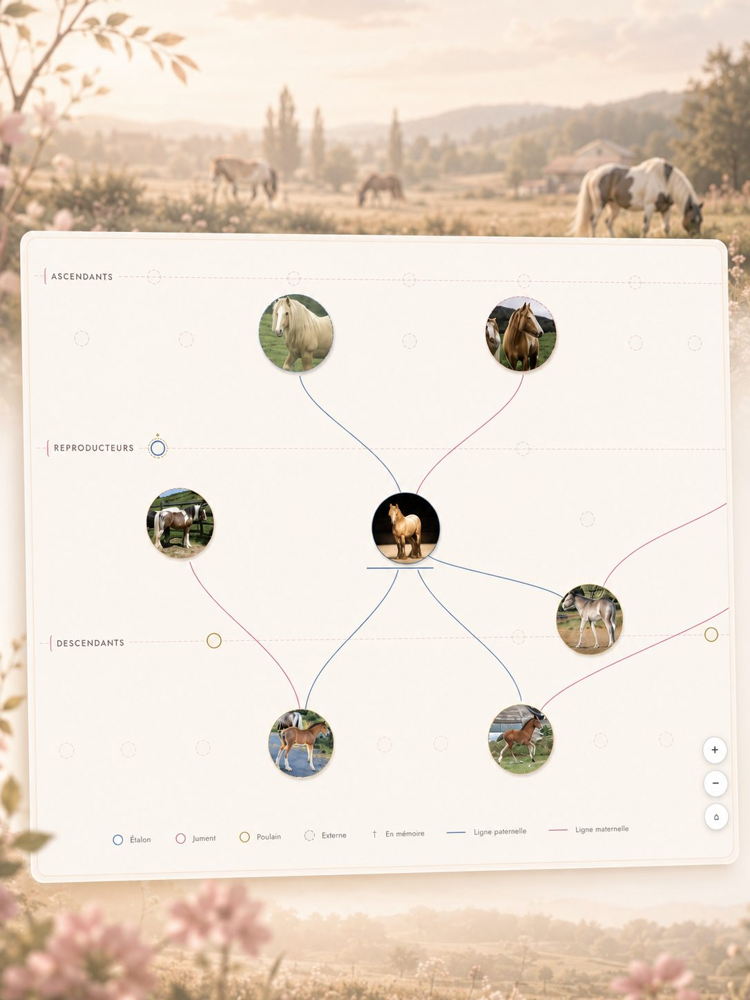
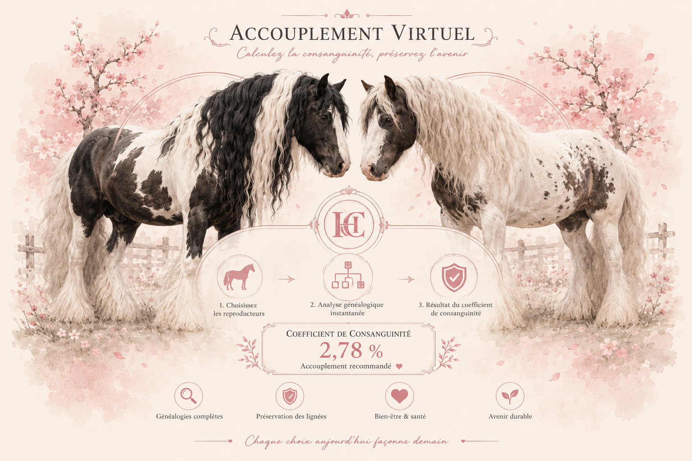

Humming Cob
Élevage Irish Cob · Gard · France
L'élégance et la douceur d'une race, élevée avec passion dans les terres du Midi.
Découvrir
Élevage Irish Cob · Gard · France
L'élégance et la douceur d'une race, élevée avec passion dans les terres du Midi.
Humming Cob est né d'une passion pour l'Irish Cob, une race qui nous séduit par sa douceur, sa polyvalence et sa proximité avec l'homme.
Après plus de trente-cinq années passées auprès des chevaux, Alice concrétise un rêve : créer un élevage familial où chaque naissance est réfléchie et chaque cheval considéré comme un individu à part entière.
Si les chevaux sont au cœur du projet, c'est aussi une aventure humaine. Bien qu'étranger au monde du cheval lorsqu'il rejoint l'aventure, Bastien s'investit rapidement dans le quotidien de l'élevage et apprend à composer avec ces grands animaux qui l'impressionnent parfois encore.
C'est également lui qui imagine et construit ce site, en se formant pour donner vie à notre univers et partager notre histoire.
Ensemble, nous élevons nos chevaux dans le Gard avec une conviction simple : faire grandir Humming Cob à notre image, en élevant des chevaux équilibrés, bien dans leur tête et dans leurs sabots, puis en accompagnant leurs futures familles avec la même attention.
Notre parcours depuis les débuts de l'élevage, retracé en images.
DécouvrirFruits de mariages mûrement réfléchis, ils grandissent à leur rythme au sein du troupeau.
Cinq chevaux sélectionnés pour leur modèle, leur tempérament et leur histoire — les racines de Humming Cob.

Notre philosophie, nos valeurs et le quotidien auprès des chevaux.
Découvrir
Les lignées irlandaises et britanniques qui ont façonné nos chevaux.
Explorer
Calculez le coefficient de consanguinité d'un couple envisagé.
TesterUne question sur nos poulains ou reproducteurs ? Une visite à l'élevage ? Nous vous répondrons dans les meilleurs délais.
Nous écrireGard (30) — France · Visites sur rendez-vous uniquement